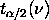

|
2.
Measurement Process Characterization
2.5. Uncertainty analysis
|
|||
| Procedures in this chapter | The procedures in this chapter are intended for test laboratories, calibration laboratories, and scientific laboratories that report results of measurements from ongoing or well-documented processes. | ||
| Pertinent sections | The following pages outline methods for estimating the individual uncertainty components, which are consistent with materials presented in other sections of this Handbook, and rules and equations for combining them into a final expanded uncertainty. The general framework is: | ||
| Specific situations are outlined in other places in this chapter | Methods for calculating uncertainties for specific results are explained in the following sections: | ||
| ISO definition of uncertainty |
Uncertainty, as defined in the ISO Guide to the
Expression of Uncertainty in Measurement
(GUM) and the International
Vocabulary of Basic and General Terms in Metrology
(VIM), is a
"parameter, associated with the result of a measurement, that characterizes the dispersion of the values that could reasonably be attributed to the measurand." |
||
| Consistent with historical view of uncertainty | This definition is consistent with the well-established concept that an uncertainty statement assigns credible limits to the accuracy of a reported value, stating to what extent that value may differ from its reference value (Eisenhart). In some cases, reference values will be traceable to a national standard, and in certain other cases, reference values will be consensus values based on measurements made according to a specific protocol by a group of laboratories. | ||
| Accounts for both random error and bias | The estimation of a possible discrepancy takes into account both random error and bias in the measurement process. The distinction to keep in mind with regard to random error and bias is that random errors cannot be corrected, and biases can, theoretically at least, be corrected or eliminated from the measurement result. | ||
| Relationship to precision and bias statements | Precision and bias are properties of a measurement method. Uncertainty is a property of a specific result for a single test item that depends on a specific measurement configuration (laboratory/instrument/operator, etc.). It depends on the repeatability of the instrument; the reproducibility of the result over time; the number of measurements in the test result; and all sources of random and systematic error that could contribute to disagreement between the result and its reference value. | ||
| Handbook follows the ISO approach | This Handbook follows the ISO approach (GUM) to stating and combining components of uncertainty. To this basic structure, it adds a statistical framework for estimating individual components, particularly those that are classified as type A uncertainties. | ||
| Basic ISO tenets |
The ISO approach is based on the following rules:
|
||
| ISO approach to classifying sources of error |
Components are grouped into two major categories, depending on the
source of the data and not on the type of error, and each component
is quantified by a standard deviation. The categories are:
|
||
| Interpretation of this classification | One way of interpreting this classification is that it distinguishes between information that comes from sources local to the measurement process and information from other sources -- although this interpretation does not always hold. In the computation of the final uncertainty it makes no difference how the components are classified because the ISO guidelines treat type A and type B evaluations in the same manner. | ||
| Rule of quadrature | All uncertainty components (standard deviations) are combined by root-sum-squares (quadrature) to arrive at a 'standard uncertainty', u, which is the standard deviation of the reported value, taking into account all sources of error, both random and systematic, that affect the measurement result. | ||
| Expanded uncertainty for a high degree of confidence |
If the purpose of the uncertainty statement is to provide coverage
with a high level of confidence, an expanded uncertainty is computed as
where k is chosen to be the  critical value from the t-table for v degrees of freedom. For large degrees of freedom, it is suggested to use k = 2 to approximate 95% coverage. Details for these calculations are found under degrees of freedom. |
||
| Type B evaluations | Type B evaluations apply to random errors and biases for which there is little or no data from the local process, and to random errors and biases from other measurement processes. | ||